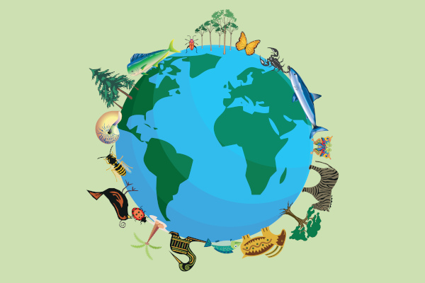

O QUE É ECOLOGIA
ECOLOGIA estuda interações entre seres vivos e ambiente. Inclui autoecologia e sinecologia. Importante para Enem, envolve cadeia alimentar, sucessão ecológica, e relações ecológicas.
CARACTERÍSTICAS
1- Interdisciplinaridade: A ecologia integra conceitos e métodos de várias disciplinas, incluindo biologia, geografia, climatologia, matemática e outras, para compreender os sistemas ecológicos complexos.
2- Escalas de Estudo: A ecologia abrange uma ampla gama de escalas, desde o estudo de indivíduos e populações até comunidades, ecossistemas e biosfera. Isso permite uma compreensão abrangente das relações entre os seres vivos e seu ambiente.
3- Ênfase nas Interações: Ela se concentra nas interações entre os organismos e os fatores abióticos do ambiente, investigando como essas interações moldam a distribuição, abundância e diversidade das espécies.
4- Aplicação Prática: Além de sua importância teórica, a ecologia tem aplicações práticas significativas em questões ambientais, como conservação da biodiversidade, gestão de recursos naturais, controle de pragas e manejo de ecossistemas.
5- Conceitos-Chave: Existem conceitos fundamentais na ecologia, como cadeias alimentares, sucessão ecológica, nicho ecológico, competição, predação, parasitismo, mutualismo e simbiose, que são essenciais para entender os processos ecológicos.
CONSERVAÇÃO DA BIODIVERSIDADE
A conservação da biodiversidade é essencial para proteger a variedade de vida na Terra. Enfrenta ameaças como perda de habitat e mudanças climáticas. Envolve a proteção de áreas naturais, espécies ameaçadas e a promoção de práticas sustentáveis. Requer o envolvimento comunitário e esforços globais para garantir um futuro saudável para o planeta.
MATERIAL PARA ESTUDO
Mapa Mental e Vídeo Aula com Descomplica